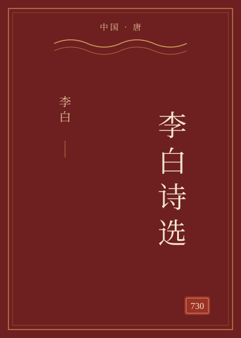

李白诗选
一、基本信息
| 作者 | 李白 |
|---|---|
| 成书/出版 | 诗作于725—762年间（安陆—长安—流放各期）；通行选集数百首 Li Bai — Encyclopaedia Britannica（百科全书） |
| 国别/地区 | 中国 |
| 时代 | 古代 · 唐 |
| 体裁 | 诗选集 |
| 语言 | 汉语（文言诗体） |

二、创作背景
本库以'选集'立目：通行选本（复旦大学、人民文学等版本）篇目大同小异——《蜀道难》《将进酒》《梦游天姥吟留别》《行路难》《静夜思》《望庐山瀑布》《早发白帝城》《赠汪伦》《黄鹤楼送孟浩然之广陵》《月下独酌》等（选目因版本而异，本页不列固定目录，逐版本待核）。
Britannica（Li Bai 条）：其诗咏酒、友谊、孤独、时间与自然（'often celebrated drinking'；'treats friendship, solitude, the passage of time, and nature'）——选目恰循此主题。
创作分期（通说）：蜀中与漫游期（725—742）、长安供奉期（742—744）、再漫游期（744—755）、晚年流放期（756—762）。
三、内容脉络
咏酒豪情：《将进酒》——'人生得意须尽欢，莫使金樽空对月'（原文，公有领域）；《月下独酌》——'举杯邀明月，对影成三人'（原文，公有领域）。
山水奇想：《蜀道难》——'蜀道之难，难于上青天'（原文，公有领域）；《望庐山瀑布》——'疑是银河落九天'（原文，公有领域）。
友谊与送别：《赠汪伦》——'桃花潭水深千尺，不及汪伦送我情'（原文，公有领域）；《黄鹤楼送孟浩然之广陵》——'孤帆远影碧空尽'（原文，公有领域）。
孤独与时间：《静夜思》——'举头望明月，低头思故乡'（原文，公有领域）；《春夜洛城闻笛》与《宣州谢朓楼饯别校书叔云》——'抽刀断水水更流'（原文，公有领域）。
政治与流放：《行路难》——'长风破浪会有时'（原文，公有领域）；《早发白帝城》——'轻舟已过万重山'（原文，公有领域）。
四、主要人物表
| 人物 | 身份 | 说明 |
|---|---|---|
| '我'（诗人自我） | 谪仙·酒徒·游侠 | 李白诗的第一主角是'自我'——豪放不羁的抒情人格（通说） |
| 明月 | 贯穿意象 | 从《静夜思》到《把酒问月》——月是李白的朋友与乡愁 |
| 孟浩然、汪伦、杜甫 | 友情对象 | 送别与酬唱诗的受赠者 |
五、主题与艺术特点
- 酒与诗的生命观：'天生我材必有用，千金散尽还复来'（原文，公有领域）。
- 自由与束缚：'安能摧眉折腰事权贵，使我不得开心颜'（《梦游天姥吟留别》原文，公有领域）。
- 乡愁与月亮：最简洁的《静夜思》承载最大的情感（通说）。
- 艺术特点：乐府歌行的奔放句式、夸张与神话想象、清新如口语的绝句——Britannica 的'freshness and imagination'。
六、影响与评论
- Britannica（Li Bai 条）：'He rivaled Du Fu for the title of China's greatest poet'——与杜甫并争中国最伟大诗人。
Li Bai — Encyclopaedia Britannica（百科全书） - Britannica（Chinese literature 条）：Li Bai (701–762) 'considered one of China's greatest poets'，浪漫、想象性的诗写友谊、孤独、自然与饮酒（B083）。
Chinese literature — Encyclopaedia Britannica（百科全书） - 世界影响：庞德《神州集》（Cathay，1915）经费诺罗萨手稿译李白等（Britannica Ezra Pound 条：Cathay adapted from Ernest Fenollosa's papers——通说待核）。
T.S. Eliot — Encyclopaedia Britannica（百科全书） - 教育地位：《静夜思》为华人世界启蒙第一诗（通说待核）。
Li Bai — Encyclopaedia Britannica（百科全书）
七、阅读建议
- 乐府歌行的长句与用典（《梦游天姥》）需要注释。
- '豪放'不等于'容易'——格律与意象的精微（如绝句）需要慢读。
- 编年背景（永王事件等）影响诗的读法。
- 《李白诗选》（复旦大学古典文学教研组选注，人民文学出版社，通说待核）：通行选本。
- 《李太白全集》（中华书局，王琦注，通说待核）：全集底本。
- 英译：Ezra Pound, Cathay（1915，通说待核）与 Stephen Owen 译本（通说待核）。
先读绝句组（静夜思、望庐山瀑布、早发白帝城）→ 乐府歌行组（蜀道难、将进酒、梦游天姥）→ 送别与友情组 → 按编年通读选本。
八、待核实
- 选本篇目因版本而异——复旦版/人文版目录逐版本核对。
- 引文（将进酒等）的逐字核对照通行本。
- 庞德《神州集》与李白的篇目对应待核。
- 复旦版选注出版信息待核。
本页主要来源
- Li Bai — Encyclopaedia Britannica（百科全书）
- Chinese literature — Encyclopaedia Britannica（百科全书）
- T.S. Eliot — Encyclopaedia Britannica（百科全书）
李白的其他收录作品：李白诗选